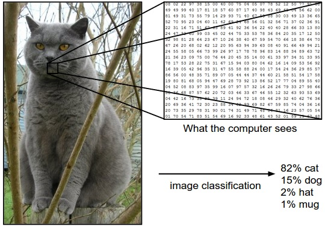
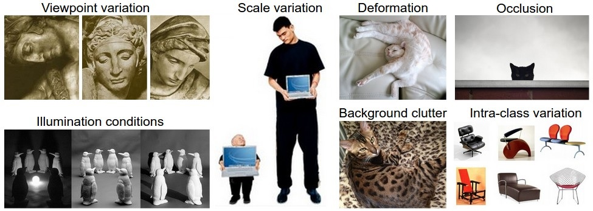
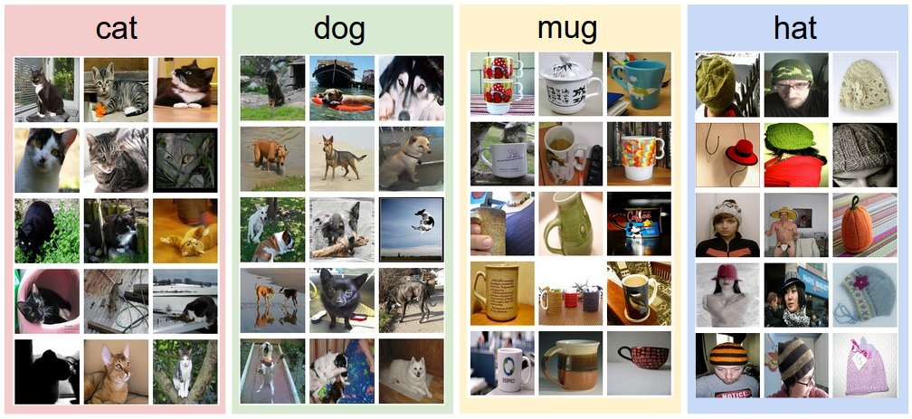

Image Classification is a task of assigning an input image one label from a fixed set of categories. Many Computer Vision tasks (such as object detection, segmentation) can be reduced to image classification.
For computer images are 3-dimensional arrays of integers from 0 (black) to 255 (white) representing brightness, of size [Width x Height x 3]. The 3 represents the three color channels Red, Green, Blue.

The task in Image Classification is to predict a single label (or a distribution over labels as shown here to indicate our confidence) for a given image.Challeges for vision algorithm

Viewpoint variation - Image can be oriented in many ways with respect to the camera.
Scale variation - Visual classes often exhibit variation in their size.
Deformation - Many objects of interest are not rigid bodies and can be deformed in extreme ways. e.g. cat
Occlusion - Sometimes only a small portion of an object (as little as few pixels) could be visible.
Illumination conditions - As pixel represents the brightness value the effects of illumination are drastic on the pixel level.
Background clutter - The objects of interest may blend into their environment, making them hard to identify.
Intra-class variation - The classes of interest can often be relatively broad, such as chair. There are many different types of these objects, each with their own appearance.
A good image classification model must be invariant to the cross product of all these variations, while simultaneously retaining sensitivity to the inter-class variations.
Image classification pipeline

Our goal is to build an image classifier which would correctly label an image identifying the object it contains.
Data collection - first accumulate a dataset of $N$ images, each labeled with one of $K$ different classes. This would be our training set.
Learning - Given the training set to algorithm, it will learn how every one of the classes looks like.
Evaluation - Now it’s a exam time of a classifier. We give a new set of unseen images to a model and ask to predict their labels. Compare the predicted labels with the true labels. Expectation is that a lot of predictions should match up with the true answers (which we call the ground truth).
Data set
One popular toy image classification dataset is the CIFAR-10 dataset.
$N$ = 60,000 images
$image\, size = [32 x 32 x 3]$
$K$ = 10 classes like airplane, automobile, bird, etc
There are differenet machine learning algorithms which we can train to classify images. Each algorithm gives different performence. We will start to explore them all starting from k-Nearest Neighbor, Linear classification to Neural network.